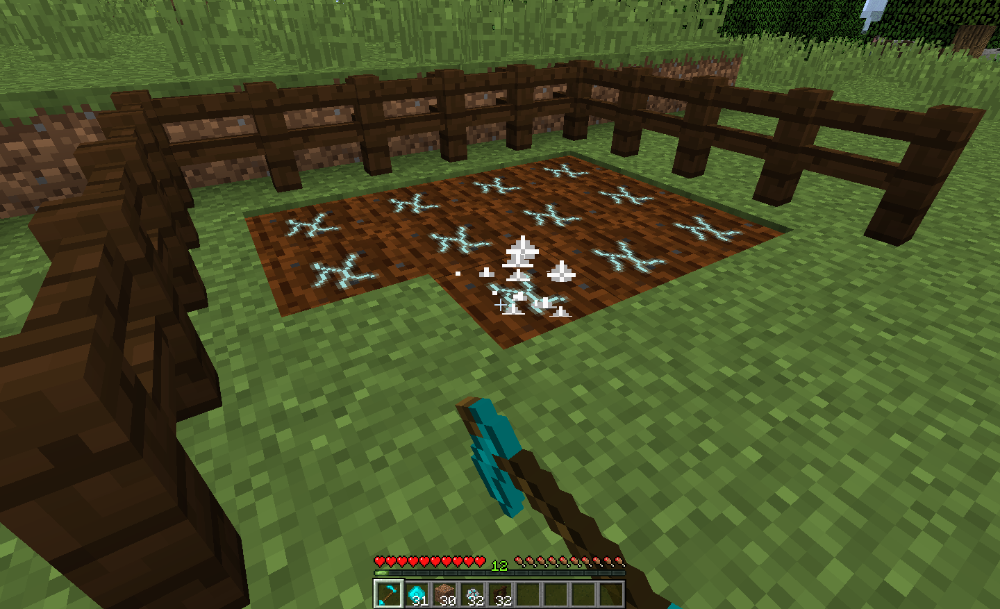

Changes in 1.13.2
The Mineral Hoe was changed quite drastically in
the 1.13.2 update. Firstly, the Hoe can be changed
by either looking at air and right-clicking with the
Hoe in hand and Mineral Crystals in inventory, or by
shift-right-clicking on any block that isn't a plant
or Mineral Soil. The Mineral Hoe can now tell the
growth stage of plants and the Mineral Content of
Mineral Soil by right-clicking the plant/soil with
the Mineral Hoe. Last, but not least, the Mineral
Hoe can now also be used to grow plants like bonemeal
in creative mode.
Obtaining and using the Mineral Hoe
The Mineral Hoe is crafted like any other hoe with
two sticks and two Mineral Crystals. When crafted,
it has two charges by default which will let
you till two dirt/grass blocks into Mineral Soil.
Once these charges are used up, you'll have to add
more by shift-right-clicking on a block with the
Mineral Hoe in your main hand and have Mineral
Crystals in your inventory, which will be used up to
charge the hoe. One Mineral Crystal will give you one charge.
You'll hear a "ding" sound when done correctly.
The Mineral Hoe can store up to
64 charges by default.

Using the Mineral Hoe to till
grass into Mineral Soil.